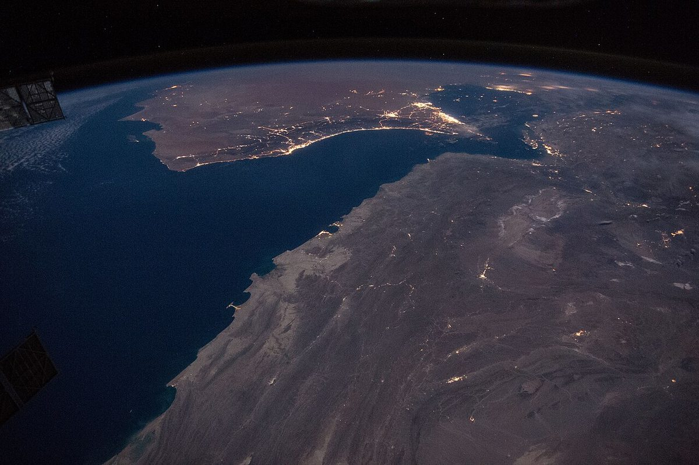

Diplomacy
Translated stories in Diplomacy.

Diplomacy · Donya-ye Eghtesad
Foreign ministry spokesman Bakaei announced Iran's conditions for ending war and said agreement reached with Oman on safe passage corridor in Hormuz.

Diplomacy · Hamshahri
U.S. Vice President Vance told Reuters that for the war to end, Iran must reduce its uranium enrichment capacity.

Diplomacy · Ettelaat
The US withdrew all B-1 bomber aircraft from the Fairford base in the UK, where a terror plot investigation is underway.

Diplomacy · Donya-ye Eghtesad
According to Axios, the US expelled two Iranian UN diplomats who ignored an order to leave New York as tensions escalate.

Diplomacy · Khabaronline (via Axios)
Per Axios, Rubio, Hegseth, Witkoff, Ratcliffe and Caine discussed next steps in the Iran war at a meeting chaired by Vance.

Diplomacy · Ettelaat (via Al Jazeera and AP-NORC)
An AP-NORC poll finds 69% of Americans don't think the Iran war is worth it; Democrats want the war budget cut.

Diplomacy · Donya-ye Eghtesad
On the anniversary of the return of UN sanctions, the US and its allies pledged to enforce arms and technology restrictions on Iran.

Diplomacy · Ettelaat
Iraq's government said Iranian carriers secured a US exemption for flights to Najaf. Tehran media reported it with different emphases.